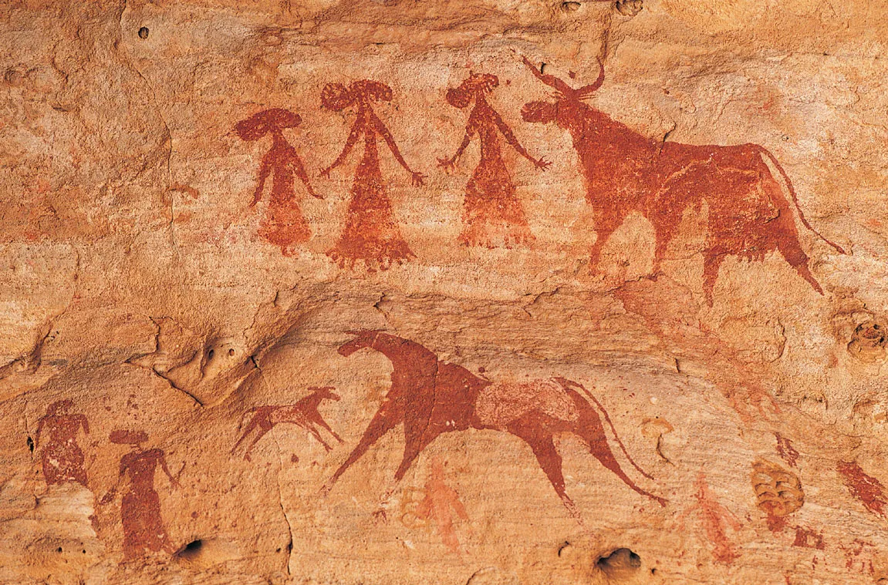

Historical Context
Prehistoric art marks the beginning of human creativity. During the Paleolithic era, early humans created cave paintings, carvings, and sculptures as part of rituals, hunting magic, and spiritual beliefs. These works reflect survival instincts and early communication systems.
Key Artists
Artists remain unknown. However, famous cave sites like Lascaux (France) and Altamira (Spain) show remarkable skill and understanding of movement and anatomy.
Visual Characteristics
Natural pigments, earth tones, animal subjects, handprints, and symbolic imagery dominate this period. Motion and storytelling were important.
How Elements & Principles Evolved
Basic use of line, shape, balance, and rhythm began forming. Composition techniques were simple yet effective.